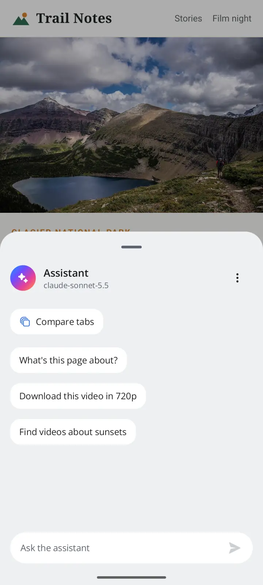

Ask about a page
How-to
Ask what the current page says, for a summary, or anything about it. It only reads the page after you've seen what would be shared and said yes (unless you chose otherwise).
Ask
- Open the page and tap the assistant's button in the middle of the bar (TalkBack: AI assistant).
- The panel opens at the bottom: the assistant's two stars, its name, the model under it, and your chat. An empty chat offers your saved tasks and examples to tap that follow the page (below).
- Type your question in the message box and tap Send, the round button at its end (grey until you've typed something).
While the box is empty it says what to do: Ask about this page in an empty chat, Ask a follow-up once you've asked something, and "Ask" with the assistant's name on the start page, where there's no page to ask about.
One small line over the box says what the assistant can see:
- Can read deltaecho3.github.io, after you say yes: it reads the page only once you tap Share on the sharing card (below).
- Can read deltaecho3.github.io without asking: you chose Always share pages, to always share that site, or Always allow. A page on your local network (a router, a printer) always gets the card, so there it says "after you say yes".
- Working on deltaecho3.github.io. It asks before what reads as a login, purchase, deletion or send.: while it works, the site it's working on (see what it always asks about).
- No line on the start page or a new tab, on a locked tab until you unlock it, on a page whose certificate couldn't be verified (it doesn't read those), in a private tab, or while a card waits for your answer.

Examples to tap
Under your saved tasks, Try on this page offers examples as chips, picked by what the tab shows, with Compare tabs last among them when you have tabs to compare (see compare your tabs). On the start page the chips come without the heading, as they aren't about a page. Wayward picks them from what it already knows about the tab, so nothing is sent to pick them, and they change as the page does (when a video turns up after the panel opened, say).
- On the start page or a new tab: Search the web for…, Find videos about sunsets and What have I downloaded lately?.
- On a page where Wayward found a video: What's this video about?, Download this video and What's this page about?.
- On an article (a page Reader view can show): Summarize this article, List the main points and Find something on this site….
- On any other page: What's this page about?, Find something on this site… and Find videos about sunsets.
An example that ends in … doesn't send anything: it puts its first words in the message box (Find on this site: or Search the web for) with the cursor after them, so you finish the sentence and tap Send. The others are sent at once, as your message. Reading the page still waits for your yes on the sharing card (unless you chose otherwise). Private tabs get no examples, and neither does a locked tab until you unlock it.
The sharing card
Before the assistant reads a page, it asks Share this page with the AI?, with the site under it, and one line says:
- what goes: about how many words of the page's text and how many links and buttons, any screenshots it takes (with typed text blacked out), and a video's captions if it reads them,
- where it goes: your provider and model,
- other sites shown inside the page, whose text and buttons would go too.
Under it, the size, as an estimate in tokens, which your provider bills you for, and This is a large request. when it is.
Tap What's sent to see the beginning of exactly what goes (tap it again to fold it away). Then tap Share, or Don't share. Share, and don't ask again for this site shares it and skips the card for that site from now on; when the site it would always share is wider than the address on the card (a shop's main site, say), the button names it. Share and that button work half a second after the card shows. While the card waits, the message box says Answer the question above first and takes no typing.


Sites you always share are listed in Settings > AI assistant under Sharing pages, each with Remove. There's also Always share pages, which skips the card on every site, after a privacy warning (Share pages without asking?). Private tabs are never shared, and a locked tab only after you've unlocked it.
While it works, and its answer
Each of the assistant's turns starts with a small line: its two stars and its name. While it works, a card, like Working · 3 steps so far, lists what it does as it does it, like Reading the page, with a turning ring on the step under way, and your answers to its cards as "You allowed:" or "You denied:". Tap the card's title to fold it; it folds by itself while a card waits for your answer, and opens again with a tap. Send turns into a red square, Stop; tap it and the chat says Stopped.
Once it has answered, its steps fold into one line over the answer, like "Read the page · you allowed sharing", or "3 steps · you allowed 1 action" for more. Tap that line to see every step and answer, and tap it again to fold it. A step that didn't go ahead, because you said no, it was refused or failed, or you stopped it, has a cross instead of a tick and isn't counted.
Answers are formatted as a page to read, with headings, numbered steps, bullets, tables, quotes as tip cards and code, and links in them open in a new tab next to your page. Hold a message to select and copy its text.
Under each answer, buttons say what they do: Copy copies the answer's words (without the formatting marks), What it did opens its receipt, under a message that did more than reply once it's over (see receipts and saved tasks), and Report (below).


If an answer is offensive or harmful, tap Report under it. Report this answer? sends that answer and the model's name to Wayward's support, through Android's share sheet, and nothing else from your chat or browsing.

Your chat stays
The chat is kept on your phone, encrypted, and comes back after you close Wayward, so you can carry on. Follow-up questions keep what the last messages read. To start fresh, or save it, see save, open or delete a chat. The ⋮ in the panel's top corner also has Settings, which goes straight to the assistant's settings.
The assistant doesn't work in private tabs. There the panel, in the private tab's purple, says The assistant doesn't work in private tabs and that nothing from a private tab is sent to your AI provider; to ask about a page, open it in a regular tab. None of your chat from regular tabs shows there, and there's no message box. While a task runs in a regular tab, a line under the card says so, with Stop. If the task needs your answer, the line says it's waiting; go back to a regular tab and the assistant opens with the question.